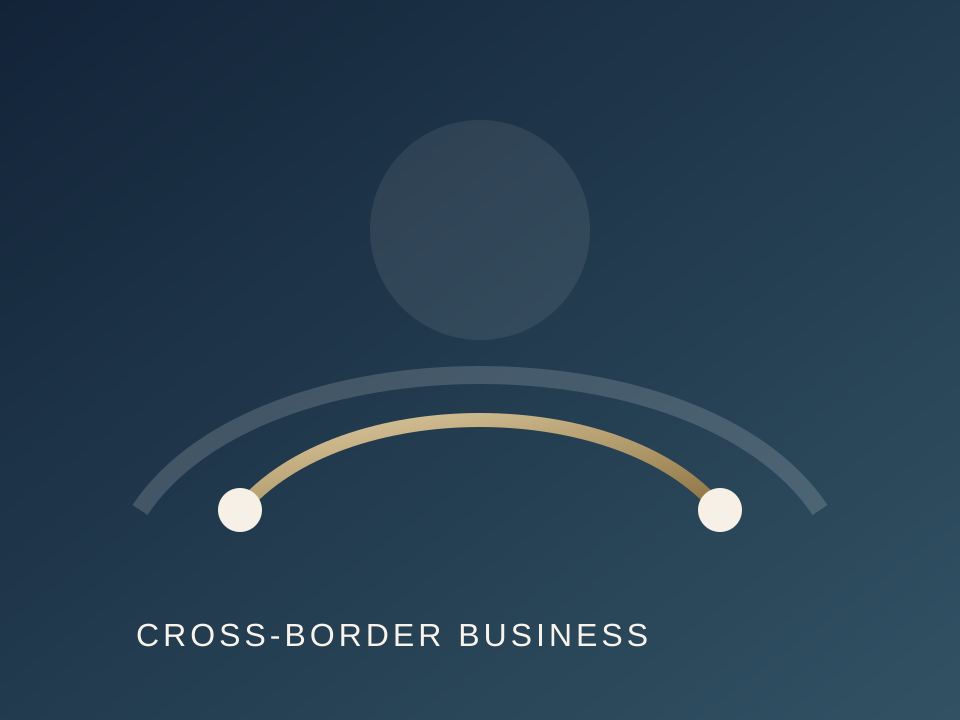

Internationale Perspektive
Grenzüberschreitende Kontexte mit klarer fachlicher Trennung
Die persönliche Dachmarke adressiert internationale Fragestellungen mit Bezug zu Malta, Deutschland und dem europäischen Umfeld, ohne konkrete Rechts-, Steuer- oder Erfolgsaussagen zu versprechen.

Internationale Beratungsperspektive
Unternehmerische und rechtliche Fragen überschreiten heute häufig Ländergrenzen. Die Website beschreibt daher eine Perspektive, die internationale Konstellationen, verschiedene Marktlogiken und den Bedarf an strukturierter Koordination berücksichtigt.
Malta / Deutschland / EU als thematische Achse
Ein besonderer Fokus liegt auf Sachverhalten, die Malta, Deutschland und den EU-Raum berühren. Dieser Hinweis ist thematischer Natur und ersetzt keine konkrete Rechts-, Steuer- oder Finanzberatung.
Cross-Border-Themen
Typische Themen können Gesellschaftsstruktur, Vertragsbezug, Standortfragen, Relocation, Koordination zwischen Beratern oder die Einordnung von Verantwortlichkeiten betreffen. Welche operative Einheit zuständig ist, hängt vom konkreten Anliegen ab.
Unternehmer, Investoren und Private Clients
Die Dachmarke ist vor allem dort relevant, wo anspruchsvolle Entscheidungen mehrere Perspektiven gleichzeitig berühren und ein sauberer Einstiegspunkt gewünscht ist.
Getrennte Bereiche, koordinierte Perspektive
Koordination von Legal und Consulting erfolgt über getrennte Bereiche. Rechtsberatung erfolgt ausschließlich durch entsprechend zugelassene Berufsträger. Consulting-Leistungen stellen keine Rechtsberatung dar.
Passenden Leistungsbereich auswählen
Für eine erste Einordnung Ihres grenzüberschreitenden Anliegens stehen beide Leistungsbereiche mit klarer Abgrenzung bereit.